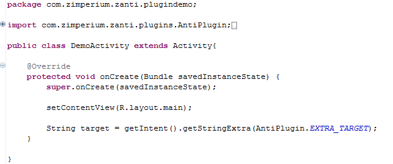

In order to turn your Android app into a zANTI Plugin, you need the following support library:
In either a new android app, or an existing one, place the jar file into the libs/ folder, creating the folder if necessary.
In the properties for the app, add the zanti plugin library.jar to the build path (Add Jars...)
In the AndroidManifest.xml file, add the following receiver to your application block:
<receiver android:name="com.zimperium.zanti.pluginlib.PluginAnnouncer" >
<intent-filter>
<action android:name="com.zimperium.zanti.plugins.DETECT" />
</intent-filter>
</receiver>
Add the following zanti.xml file to your /res/values/ folder:
<?xml version="1.0" encoding="utf-8"?>
<resources>
<string name="zanti_plugin_id">Unique ID here.</string>
<string name="zanti_plugin_title">Place a title here.</string>
<string name="zanti_plugin_description">Place a description here.</string>
<string name="zanti_plugin_type">PLUGIN_CIRCLE</string>
<string name="zanti_plugin_activity_to_run">com.example.DemoActivity</string>
<bool name="zanti_plugin_requires_root">false</bool>
</resources>
In order for your plugin to inter-operate with zAnti, you must create an activity which will serve as an entry point.
This is a regular Android Activity, such as the one below:
When you define your activity in the manifest, you must have android:exported="true" set, as below:
zAnti will pass data about the current target and running enviroment to your activity.
zMarket is a method for you to distribute your plugins to users.
Once you have build your plugin and created an apk file, you can upload it.
Navigate to http://remote.anti.zimperium.com/zmarket and login using your zAnti username and password.
Press the 'Upload Plugin' button as shown below:
You must fill out all fields. The plugin name must match zanti_plugin_title from your plugin.
Once you complete the form, you can submit it and your application will automatically be available to users.